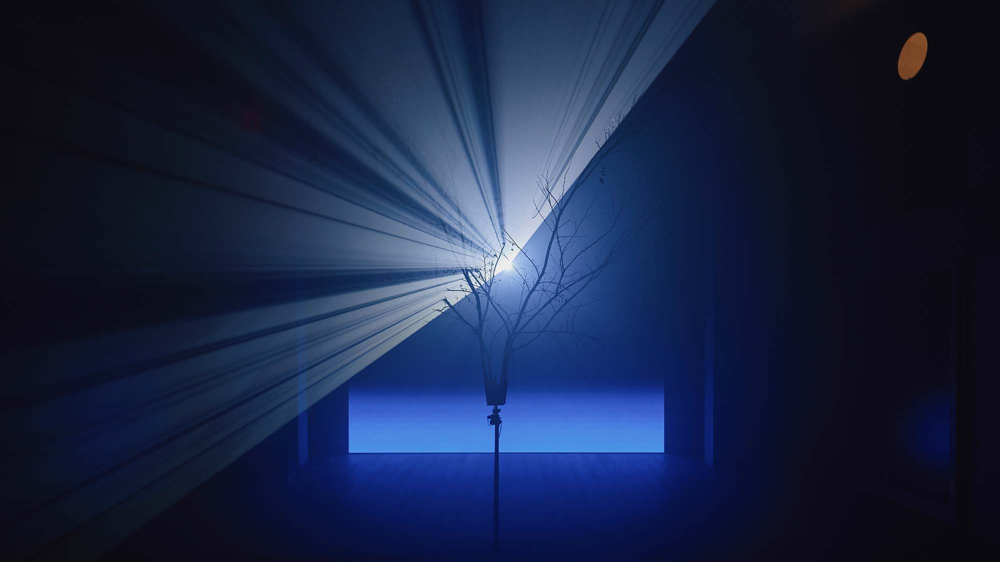
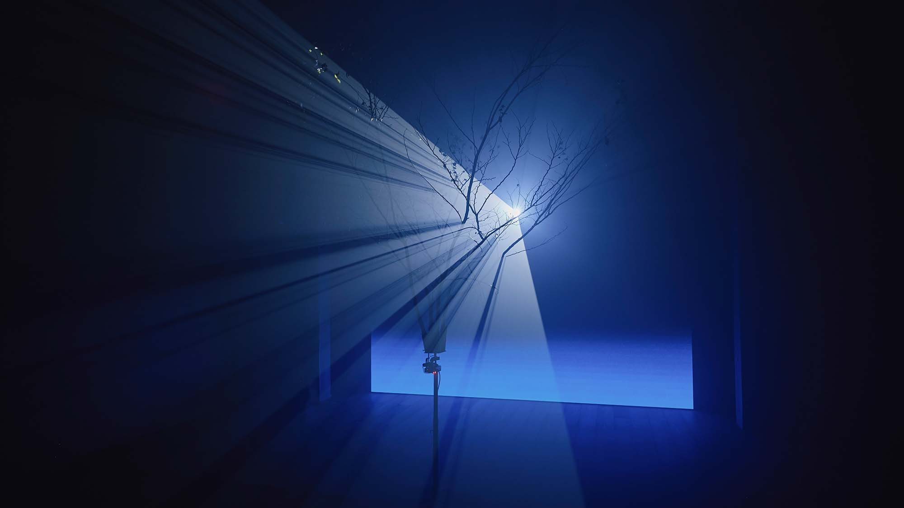
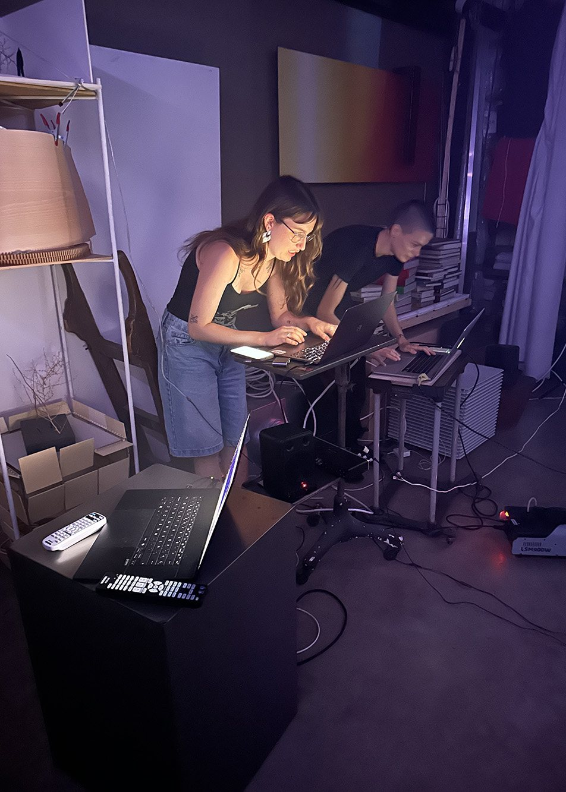
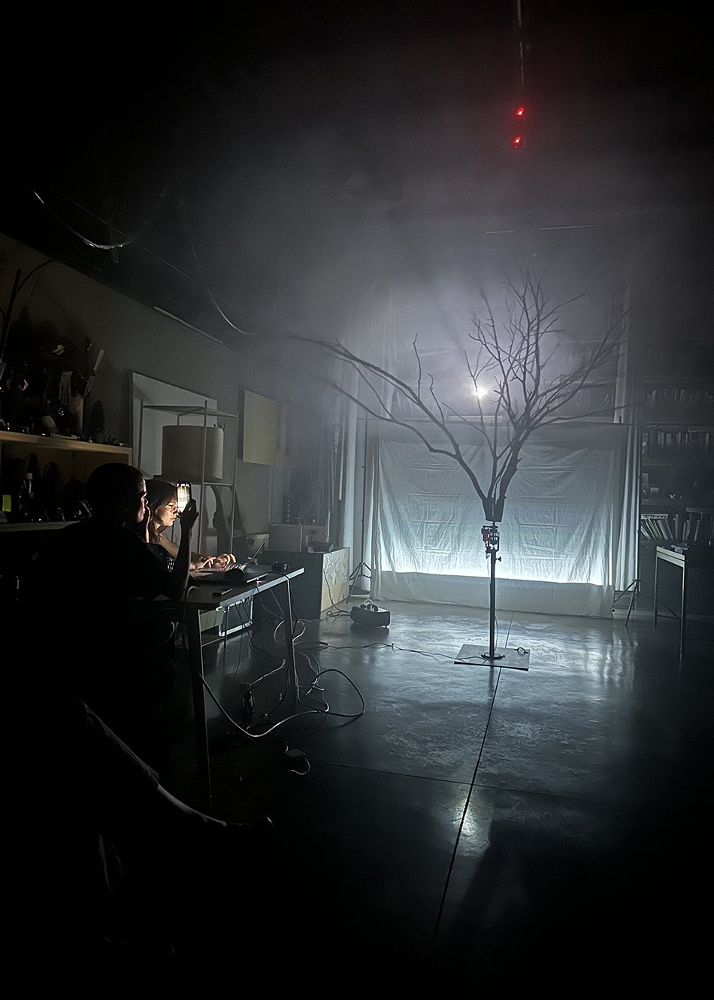
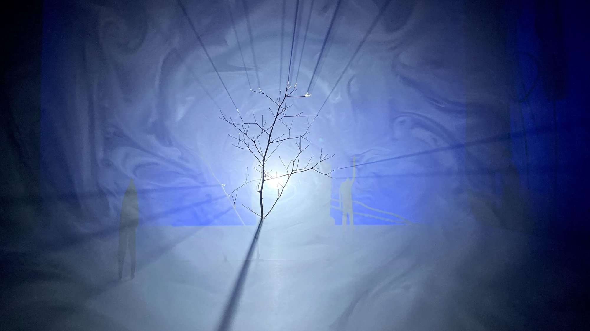
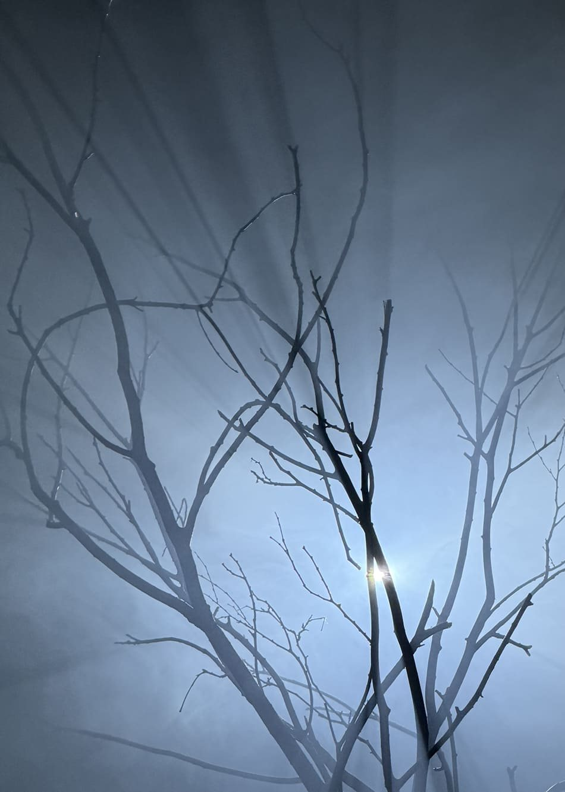

3. A Dialogue with Light de Antoni Arola (B1F)
Instalación artística de Antoni Arola en su primera exposición individual en Karimoku Research, TokioEn octubre de 2025, Santa & Cole presentó la obra de Antoni Arola en el KARIMOKU RESEARCH CENTER de Tokio. La exposición, repartida en tres plantas, recorría todos los caminos que sigue el artista para dialogar con la luz. Los visitantes encontraban distintas perspectivas a través de instalaciones inmersivas, diseño de producto y momentos del proceso creativo, donde la luz se convierte en materia, la intuición en método y cada forma en un acto de descubrimiento.
En ese contexto trabajé en la planta B1, dedicada a una instalación artística: un árbol mecánico que giraba lentamente, acariciado por un plano de luz que también giraba despacio. De vez en cuando, una de sus ramas activaba un sensor que hacía sonar un grillo, y ese sonido también afectaba a la luz. Todos estos elementos juntos creaban una atmósfera bella y serena que cautivaba a cada visitante.



Durante esta etapa en el estudio tuve la suerte de participar en todas las fases del desarrollo de la instalación: desde la experimentación hasta el diseño y la formalización. Me encargaron experimentar con el movimiento circular de la figura principal del árbol a través de la luz y el sonido, para lo que usé distintas herramientas: proyectores, láseres, video tracking y sonido generativo.
Una vez definida la forma, desarrollé la parte técnica de la instalación: desde la proyección hasta la interacción física del árbol con el sonido y la luz, y cómo debía implementarse todo en el espacio para que funcionara. Para ello usé principalmente ESP32, sensores y Resolume, todo conectado por OSC.





Proyecto de Antoni Arola
Asistente de diseño en Estudi Antoni Arola, 2025
Asistente de diseño en Estudi Antoni Arola, 2025